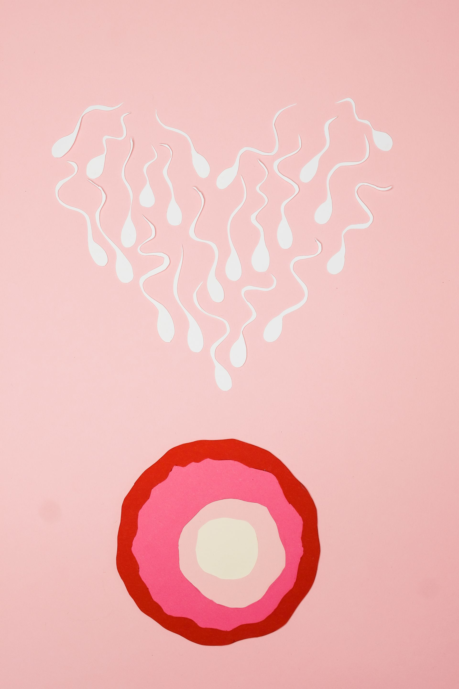
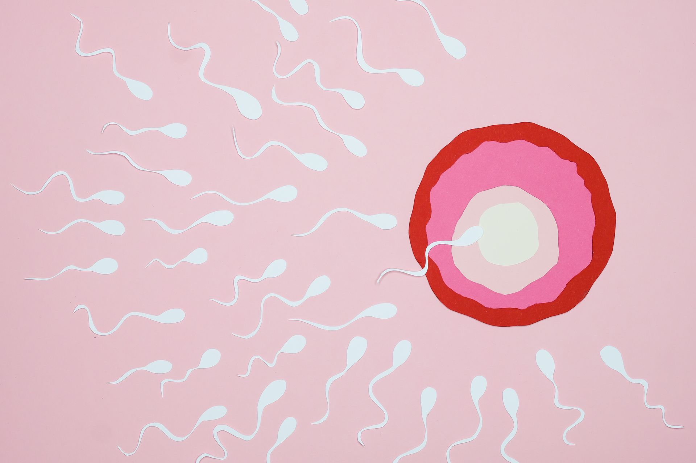
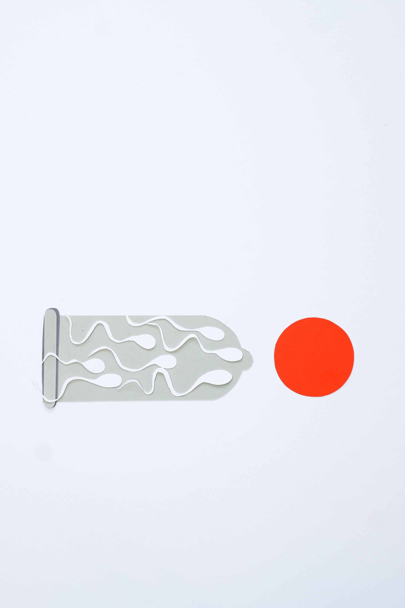

温暖陪伴每一步 · 知识科普 · 疑惑解答 · 理性支持
用一分钟认识科学与温暖的陪伴
聚焦知识普及与疑惑解答，帮助您建立科学认知
从生育基础、身体调理到检查解读与心理支持，系统梳理常见知识点。

辅助生殖技术介绍、检查报告阅读、治疗周期说明、冻卵知识与常见误区澄清。
汇总高频疑问，按基础认知、检查、流程、费用与心理分类解答。
添加微信，获得一对一沟通指引。我们专注倾听与科普答疑。
备孕经验、调理心得、心理路程与生活故事，看见真实的人与故事。
了解平台理念、内容原则与联系方式，共同守护科学与温度。
先从这些基础内容开始

了解自然受孕的基本过程、影响生育力的主要因素，建立正确的科学框架。
女性与男性生育力随年龄变化的趋势，以及不同阶段可以关注的事项。

用通俗语言介绍常见辅助生殖方式的大致原理与适用情况（非治疗建议）。
我们专注知识科普与疑惑解答，不提供医疗诊断与治疗方案。添加后请说明来意，我们会尽快回复。